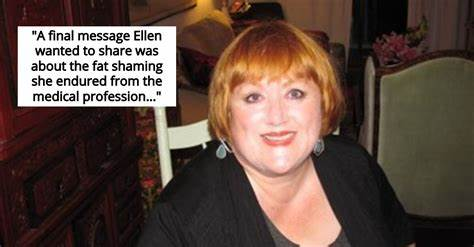
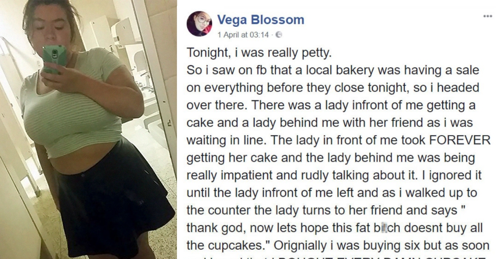

Fat shaming
Fat shaming is the unjust mistreatment of fat people which may manifest as acts of bullying, singling out, discriminating, disrespecting and/or making fun of a person in a larger body. Fat shaming is the result of an individual bias against people who are deemed unhealthy, unattractive, stupid, lazy or lacking self-control.
It is a faulty interpretation — based solely on a person’s appearance — that fatness is bad or morally wrong.
Fat shaming is bigotry. Disrespecting a person on the basis of appearance is an example of prejudice and oppression and it’s never justified. If a person is willing to bully, shame, and disrespect another, then that person is acting as an oppressive bigot. If we as a society want to be committed to anti-bigotry and prejudice, then all incidents of bigotry need to be called out as such, including fat shaming.
Fat shaming may occur under the guise of care and concern. For example, some offenders operate under their own biases that they should “help” the person who is overweight/obese realize they need to lose weight, otherwise they’ll die, become ill, and/or never succeed in life or relationships. Singling out larger bodies is often defended as an admirable action since its intention is to motivate presumed health sustaining change, weight loss. Nonetheless, judging actions by an offender’s best intentions rather than the actions themselves is denying and excusing bigotry.
Bigotry is unacceptable and fat shaming is never okay, for any reason.
Health

Fat shaming is linked to an increased risk of eating disorders, such as binge eating. Reduced self-esteem.
Fat shaming is linked to reduced self-esteem. Others. By causing stress, weight gain, increased cortisol levels, and mental problems, weight discrimination may raise your risk of various chronic diseases.
- Depression. People who are discriminated against due to weight are at a higher risk of depression and other mental issues.
- Eating disorders. Fat shaming is linked to an increased risk of eating disorders, such as binge eating.
- Reduced self-esteem. Fat shaming is linked to reduced self-esteem.
- Others. By causing stress, weight gain, increased cortisol levels, and mental problems, weight discrimination may raise your risk of various chronic diseases.
Evidences

In one study in 6,157 people, non-obese participants who experienced weight discrimination were 2.5 times more likely to become obese over the next few years.
Additionally, obese people who experienced weight discrimination were 3.2 times more likely to remain obese and This shows that fat shaming is unlikely to motivate people to lose weight.
Another study in 2,944 people found that weight discrimination was linked to a 6.67-times greater risk of becoming obese.
Organizations
The Fat, Skinny, and Fabulous: The No Body Shaming Campaign
Gives awareness to the people in the society to get rid of the boundaries of shame and feel confident in their bodies. It is created for the protection of those women who have extra weight and constantly face a negative wave of feedback about their weight. The result of body shaming can sometimes be destructive and ruin many fates of women.